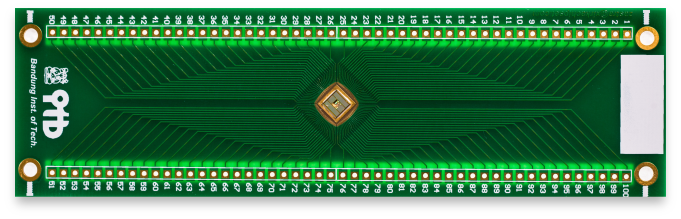
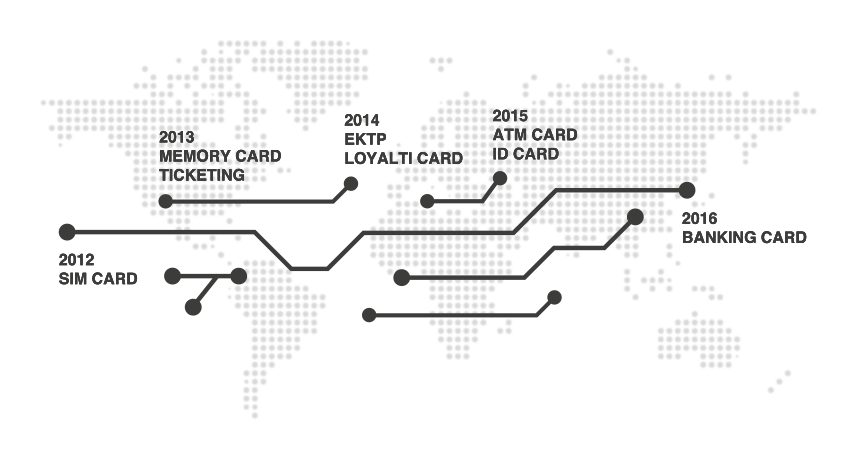

About Us
Xirka Silicon Technology creates innovative integrated circuit (IC) to provide mass product for a dynamic lifestyle.
Based on its expertise in integrated circuit design, Xirka creates innovation in the identification and mobile industries to provide secure, reliable, and competitive products to our customers.
From 2005 to 2008, the company did a chip design house outsourcing business, serving multinational electronics company in Fukuoka, Japan. XST was established in May, 2008 as a fabless company focusing in WiMax Baseband chipset.
XST has highly motivated staffs that are talented and highly expertise people graduated from various famous university in the world and Indonesia.
Xirka is principal Member of WiMax Forum. In 2012, Xirka started developing integrated circuit for smart card technology including NFC memory card chip, contact and contactless CPU card chip.
Product Roadmap
Our world is facing big change: new digital era on information and communication. The new technologies are making revolutionary impact on our daily life and behavior. As a global company, Xirka takes its responsibilities for global changes very seriously.
Our smart card solutions for identification, security, payment, mobile solution, as well as information and communications technology offer an answer to the challenges confronting modern society and dymanic lifestyle.
